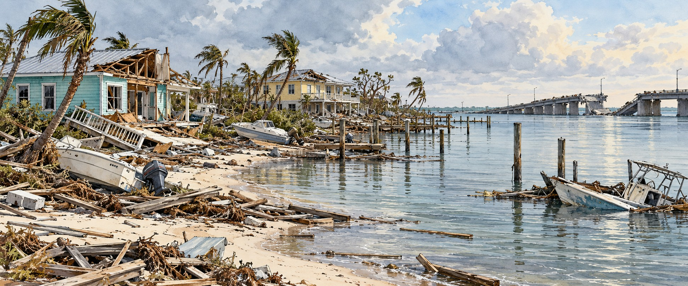

Hurricane Ian (2022)
A New Generation’s Great Storm

“She stayed on the island. They evacuated. She did not want to go.” — Chris Schnapp
Chris Schnapp stood at the Port Sanibel Marina watching a pontoon boat bring island survivors ashore, searching the faces for her eighty-three-year-old mother-in-law. She was not aboard. “She stayed on the island,” Schnapp said. “She did not want to go.” That ordinary family decision, repeated across thousands of households on Florida’s southwest coast in September 2022, is where Hurricane Ian’s story begins. By the most authoritative count available, Ian was the costliest hurricane in Florida history and the deadliest since the Labor Day Hurricane of 1935.
A Track That Moved South at the Last Hour
Ian formed in the Caribbean on September 23, 2022 and struck western Cuba on September 27 as a Category 3, blacking out the island. Crossing the warm Gulf, it intensified from Category 3 to a high-end Category 4 in about twenty-four hours, with winds of 150 miles per hour. For days, models and public attention pointed to Tampa Bay. In the final twenty-four to thirty-six hours the track shifted south, bringing the storm’s full force onto Lee County, near the area Charley had devastated in 2004.
An Evacuation Order Less Than a Day Out
Lee County did not issue mandatory evacuation orders until less than twenty-four hours before landfall, a day after several neighboring counties. The timing drew sharp criticism. County Commissioner Kevin Ruane and Governor Ron DeSantis defended it as a response to the shifting forecast. Either way, thousands of residents had only hours to decide, gather belongings and leave.
Islands Cut Off From the Mainland
Ian made landfall at Cayo Costa at 3:05 p.m. on September 28 with sustained winds of 150 miles per hour. Surge reached ten to fifteen feet across Fort Myers Beach, Sanibel Island and Pine Island. The Sanibel Causeway collapsed in several sections, and the Matlacha Pass Bridge to Pine Island was destroyed, leaving both islands reachable only by boat or helicopter for days. Sanibel Mayor Holly Smith called the island “unrecognizable” and said, “It is not habitable.”
Ninety-Seven Percent
By some estimates, ninety-seven percent of buildings on Fort Myers Beach were damaged or destroyed, including about nine hundred totally destroyed and 2,200 damaged. Across Lee County at least 52,514 structures were affected, with 5,369 destroyed and 14,245 sustaining major damage. At least two hundred homes were destroyed in Charlotte County, and flooding from the Myakka River closed part of Interstate 75 in southern Sarasota County for days. Far inland, Central Florida saw historic freshwater flooding and more than 250 water rescues.
A Hundred and Forty-Nine Names
Counting Ian’s dead was difficult, as it had been in 1926 and 1928. The Florida Medical Examiners Commission confirmed 149 deaths across nineteen counties as of February 3, 2023, seventy-two of them in Lee County. An NBC News investigation using public records identified 148 Ian-related deaths in Florida, found that 119 were directly attributable to the storm’s flooding, wind and other immediate hazards, and concluded that most were drownings and many were preventable.
Boats in Parking Lots, Bees Without Flowers
As many as seven thousand boats were displaced or damaged. Captain Ryan Kane, looking at his ruined vessel, said, “You know boats are supposed to be in the water, not in parking lots.” About 150,000 beehives were destroyed, and the Brazilian peppertrees the surviving bees relied on for autumn nectar were stripped bare. Lee County also saw a spike in Vibrio vulnificus infections, with at least twenty-nine cases and four deaths by mid-October.
The Costliest Storm in Florida History
NOAA placed Ian’s losses at $112 billion, the costliest hurricane in Florida history, above Irma, and the third-costliest in the nation, behind Katrina and Harvey. The name was retired in March 2023. In August 2023 a U.S. House oversight committee opened an investigation into the federal recovery response, hearing from FEMA, the Small Business Administration and HUD.
Quick Facts
| Florida landfall | Cayo Costa, September 28, 2022, 3:05 p.m.; Category 4, 150 mph |
|---|---|
| Forecast shift | From Tampa Bay to Lee County in the final 24–36 hours |
| Storm surge | 10–15 feet at Fort Myers Beach, Sanibel and Pine Island |
| Lee County structures | At least 52,514 affected; 5,369 destroyed |
| Deaths | 149 confirmed (Medical Examiners Commission, Feb. 3, 2023) |
| Boats | As many as 7,000 displaced or damaged |
| Beehives destroyed | About 150,000 |
| Total damage | $112 billion (NOAA) |
Did You Know?
The Sanibel Causeway collapsed in multiple sections, cutting the island off.
About 150,000 beehives were destroyed.
The name Ian was retired in March 2023; Idris takes its place in 2028.
Vocabulary
Storm surge: wind-driven seawater pushed onto land during a hurricane.
Mandatory evacuation: an official order for residents of a zone to leave.
Vibrio vulnificus: a bacterium in warm brackish water that can cause serious wound infections.
Discussion Questions
1. How does a late shift in a forecast change what officials and residents can do?
2. What does it mean when investigators call many storm deaths preventable?
Related Articles
FLH-0008 — Hurricane Charley (2004)
FLH-0011 — Hurricane Irma (2017)
Sources
Wikipedia. “Hurricane Ian.”
National Hurricane Center. “Tropical Cyclone Report: Hurricane Ian (AL092022).” nhc.noaa.gov
Florida Department of Law Enforcement. “Update: Florida Medical Examiners Commission Hurricane Ian Deaths.” February 3, 2023. fdle.state.fl.us
NBC News. “Hurricane Ian’s High Death Toll in Florida Exposes Safety Gaps.” nbcnews.com
Encyclopaedia Britannica. “Hurricane Ian.” britannica.com
CNN. “Hurricane Ian: Florida Death Toll Soars to 76 After Ian Demolished Entire Communities.” cnn.com
ABC News. “Sanibel Island, Fort Myers Severely Damaged by Hurricane Ian in Lee County.” abcnews.go.com
PBS News / Associated Press. “Death Toll Rises to 47 in Florida, 4 in North Carolina in Wake of Hurricane Ian.” pbs.org
Fox Weather. “Hurricane Ian by the Numbers.” foxweather.com
EBSCO Research Starters. “Hurricane Ian.”